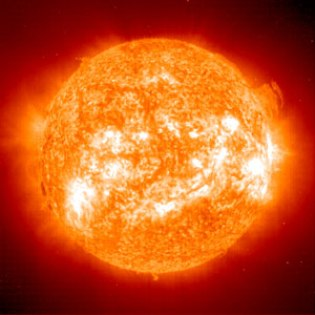

Las estrellas son esferas de plasma que emiten luz y calor debido a reacciones nucleares en su núcleo. La más cercana a nosotros es el Sol.
Se clasifican por su tamaño, color y temperatura.
Las estrellas son enormes esferas de gas que brillan en el cielo debido a reacciones nucleares que ocurren en su núcleo. Generan luz y calor, y son fundamentales para la vida tal como la conocemos.

Tipos según el color y temperatura
Las estrellas pueden tener diferentes colores, que indican su temperatura:
Azul: Muy calientes, más de 30.000 °C.
Blancas: Entre 10.000 y 30.000 °C.
Amarillas: Como el Sol, alrededor de 6.000 °C.
Naranjas: Más frías, cerca de 5.000 °C.
Rojas: Las más frías, menos de 3.500 °C.
Curiosidades
El Sol es una estrella de tipo amarillo.
Hay estrellas más grandes, más pequeñas, más calientes o más frías que el Sol.
Una estrella puede vivir desde millones hasta miles de millones de años.
Cuando una estrella muere, puede convertirse en una enana blanca, una estrella de neutrones o un agujero negro.
A continuacion un audio que demuestra como suenan las estrellas de neutronez